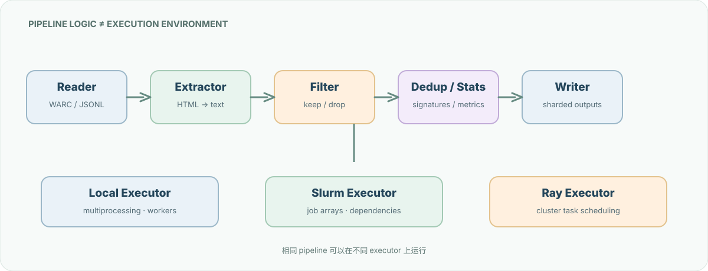
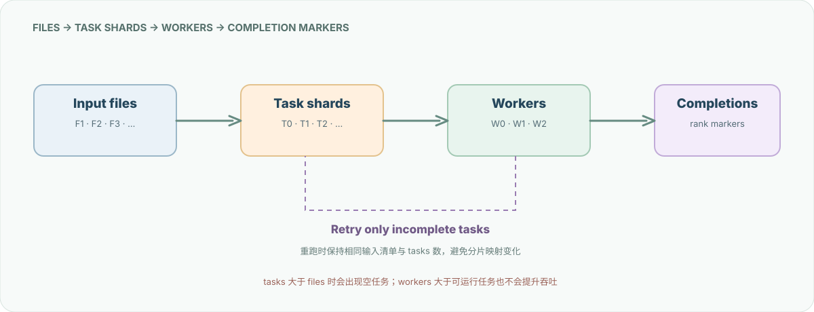
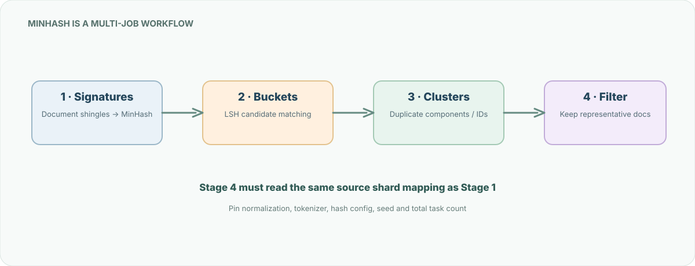

MODULE 23 / LLM DATA ENGINEERING
DataTrove 流水线实战
从 Document 与 PipelineStep 到 Local / Slurm Executor、任务分片、失败恢复和四阶段 MinHash 去重，掌握大规模数据处理工程。
当数据规模从几万条增长到数十亿文档时，清洗代码不能只是一串本地 Python 循环。我们需要把“处理什么”与“在哪里、如何并行执行”分离，并让每一步可以组合、统计、恢复和审计。DataTrove 的核心抽象正是 PipelineStep + Executor。
先建立正确的心智模型：数据流与执行器分离

DataTrove v0.10.1 是 Hugging Face 维护的可组合大规模文本处理库。它不是一个固定的“Common Crawl 清洗配方”，而是一套可以在本地、Slurm 或 Ray 环境中运行的 pipeline block 和 executor 抽象。
一条 pipeline 通常由以下类型的步骤组成：
| Block | 职责 | 典型输入 / 输出 |
|---|---|---|
| Reader | 读取源文件并构造统一 Document | WARC / JSONL / CSV → Document 流 |
| Extractor | 从 HTML 等原始格式提取正文 | 原始页面 → 正文与元数据 |
| Filter | 按规则决定文档是否继续流转 | Document → keep / drop |
| Tagger / Stats | 添加属性、计算分布与质量指标 | Document → metadata / metrics |
| Dedup | 产生重复签名、簇或过滤结果 | 文档 / 签名 / 去重索引 |
| Writer | 将结果写入本地或远程存储 | Document 流 → 分片文件 |
统一的数据对象 Document 至少包含 text、唯一 id 和 metadata。PipelineStep 的 run(data, rank, world_size) 接收文档生成器并产出新的文档生成器；filter 可以丢弃文档，reader 可以产生文档，writer 则消费文档并保存结果。
Executor：把任务分片映射到计算资源

| 概念 | 含义 | 调优问题 |
|---|---|---|
| Job | 一次 executor 对一条 pipeline 的运行 | 日志目录、输入快照和输出路径如何命名？ |
| Task | 作业中的一个逻辑分片，通常处理一组输入文件 | 单个 task 是否过大？失败重跑成本如何？ |
| Worker | 同时执行 task 的计算槽位 | CPU、内存、I/O 和远程存储是否饱和？ |
| Rank | 当前 task 的编号 | 输出文件名是否包含 rank，避免并发覆盖？ |
LocalPipelineExecutor 用 tasks 定义总任务数、workers 定义并发数；SlurmPipelineExecutor 使用 Slurm job arrays；RayPipelineExecutor 在 Ray 集群上调度。相同的 pipeline block 可以在不同 executor 上运行，这就是执行环境与数据逻辑解耦的价值。
logging_dir/completions 下记录已完成 task。重跑失败作业时，应保持输入清单、pipeline 参数和 tasks 数量不变；改变任务总数会改变文件分片映射。若 tasks 大于输入文件数，一部分任务会没有数据可处理。不同 job 不能复用同一个 logging_dir。最小可运行流水线：JSONL → 语言过滤 → JSONL
from datatrove.executor import LocalPipelineExecutor
from datatrove.pipeline.readers import JsonlReader
from datatrove.pipeline.filters import LanguageFilter
from datatrove.pipeline.writers import JsonlWriter
pipeline = [
JsonlReader(data_folder="data/raw"),
LanguageFilter(
languages=["en"],
language_threshold=0.65,
backend="ft176",
),
JsonlWriter(
output_folder="data/clean",
output_filename="${rank}.jsonl.gz",
),
]
executor = LocalPipelineExecutor(
pipeline=pipeline,
tasks=4, # 逻辑分片数
workers=2, # 同时运行的 task 数
logging_dir="logs/lang-filter-v1",
)
executor.run()这是一个小型示例，不代表完整的生产语料配方。LanguageFilter 会把预测语言与分数写入 metadata；设置语言列表和阈值后再决定是否保留。DataTrove v0.10.1 的 LanguageFilter 默认 backend 为 ft176、language_threshold 为 0.65，但实际阈值应按目标语言、混合文本和误杀成本校准。
自定义 PipelineStep
from datatrove.data import DocumentsPipeline
from datatrove.pipeline.base import PipelineStep
class WordCount(PipelineStep):
def run(
self,
data: DocumentsPipeline,
rank: int = 0,
world_size: int = 1,
) -> DocumentsPipeline:
for doc in data:
doc.metadata["word_count"] = len(doc.text.split())
self.stat_update("documents")
yield doc
# 插入到 pipeline：
# JsonlReader(...), WordCount(), JsonlWriter(...)自定义步骤要保持 generator 语义，避免一次性把全量数据装进内存；统计指标要明确单位；任何外部写操作都要设计成可重试或幂等。
MinHash 去重不是一个 block：它是一个多阶段作业

DataTrove 官方 MinHash 示例将流程拆成四个 executor 阶段：
- Signature：对每个文档计算 MinHash 签名并写到中间存储。
- Buckets：按 LSH bucket 汇总签名并寻找候选重复。
- Cluster：将候选关系整理为重复簇，输出待删除 ID。
- Filter：重新读取与第一阶段完全一致的输入分片，保留每个簇的代表文档。
这四个阶段不是可随意交换的步骤。最终过滤阶段需要与签名阶段使用相同的输入、文件分布和 task 配置，否则 ID 映射可能失配。签名参数、规范化配置、语言 tokenizer 与随机 seed 也必须被版本化。
交互实验：task 数、worker 数与输入文件数
此规划器只估算文件分片与并发上限。若输入文件数为 、逻辑任务数为 、worker 数为 ，非空任务上界与并发上界可粗略写成：
真实负载还取决于文件大小偏斜、单文件处理时间、网络吞吐、过滤比例和内存。
# scripts/datatrove_planner.py
from scripts.datatrove_planner import plan_tasks
print(plan_tasks(file_count=10_000, tasks=1_000, workers=100))从 Demo 到生产：六个必须显式化的工程约束
- 输入 manifest：冻结文件清单、大小、checksum、source snapshot 和解析器版本。
- 输出隔离：每个 task 写独立 shard，文件名包含 rank；先写临时路径，验证后再发布 manifest。
- 重试语义：完成 marker 只能说明 task 成功结束，不自动保证外部 side effect exactly-once。
- 资源画像：记录 docs/s、tokens/s、CPU、RSS、I/O、过滤率和 task p50/p95。
- 失败样本：exclusion writer 或 quarantine stream 保存被拒绝数据与原因，便于抽检。
- 版本固定：锁定 DataTrove 版本、Python、依赖 extras、配置与输入清单。
v0.10.1 tag（2026-09-30 发布）。该 tag 的 pyproject.toml 声明 Python >=3.10.0。当前 main 分支即使仍显示包版本 0.10.1，Python 要求已变为 3.11+；因此不能只看 package version 推断 API 一致，必须锁定 tag / commit。python -m pip install "datatrove[io,processing]==0.10.1"参考资料
- Hugging Face DataTrove repository / README：pipeline、Document、Executor、任务恢复和合成生成。
- PipelineStep source：run(data, rank, world_size) 接口与统计。
- BaseFilter source：true 表示保留、false 表示过滤及 exclusion writer。
- FineWeb reproduction example：网页处理与三阶段 MinHash 后过滤。
- MinHash deduplication example：signature、buckets、cluster、filter 四阶段。
- DataTrove pyproject.toml：当前版本与 Python 依赖约束。